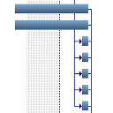

|
Citations with LaTeX |
Recent Posts all posts
|
|
Abschlussbericht der Studienstiftung |
|
|
How to typeset chess games with LaTeX |
|
|
Colors in LaTeX |
|
|
LaTeX and tables |

|
Reference Management with JabRef |
Improving lecture notes: Job (almost) done! |
LaTeX Beamer |
How to create a digital signature |
|  |
Creating Gantt Charts |